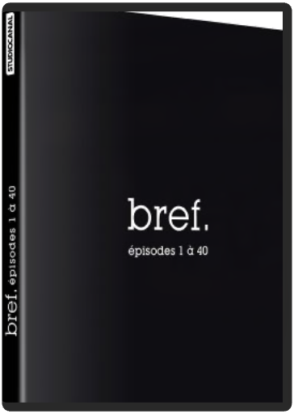

bref, épisodes 1 à 40kyan khojandi, bruno muschio  Dans la vie, au début on naît, à la fin on meurt, entre les deux il se passe des trucs. Bref. C'est l'histoire d'un mec, entre les deux. Bref raconte au travers de pastilles hilarantes, le quotidien d'un trentenaire un peu loser. Un montage ultra-rythmé et des répliques cinglantes font de Bref la série incontournable de l'année.  bref, épisodes 41 à 82kyan khojandi, bruno muschio bref, épisodes 41 à 82kyan khojandi, bruno muschio Dans la vie, au début on naît, à la fin on meurt, entre les deux il se passe des trucs. Bref. C'est l'histoire d'un mec, entre les deux. Bref raconte au travers de pastilles hilarantes, le quotidien d'un trentenaire un peu loser. Un montage ultra-rythmé et des répliques cinglantes font de Bref la série incontournable de l'année...  desperate housewives, saison 1 desperate housewives, saison 1 Qui aurait parié sur le succès d’une fiction s’intéressant au quotidien de ménagères quadra dans un quartier BCBG de la middle class ? Pourtant, dès les premières diffusions, Desperate housewives s’est hissé au top 5 des shows télés les plus regardés outre-atlantique. Ni série policière, ni sitcom, ni drame, la série regroupe le meilleur de chaque style pour l’ancrer dans une réalité tout ce qu’il y a de plus ordinaire. A partir d’un démarrage aussi mystérieux que tragique, Desperate housewives va s’intéresser, à l’aide de scénarii d’une précision chirurgicale, aux femmes de Wisteria Lane. Casting irréprochable, dialogues jubilatoires, rythme trépidant, la série livre un portrait social entre gaudriole et vitriol, glamour et linge sale, l’un des plus jouissifs qu’il ait été donné de voir depuis longtemps. Les suppléments, disséminés au gré des 6 DVD, foisonnent : commentaire audio d’une richesse faramineuse pour six épisodes, commentaire par les actrices de leur scène préférée, scènes coupées, bêtisier, une parodie à mourir de rire avec Oprah Winfrey, visite des décors, retours sur les costumes, documentaire sur les coulisses de la série…Largement de quoi patienter en attendant la saison 2. www.ecranlarge.com  desperate housewives, saison 4 desperate housewives, saison 4 La nuit suivant le mariage de Gabrielle, les habitants de Wisteria Lane sont réveillés par l'arrivée des secours suite à la fausse tentative de suicide d'Eddie. Un mois plus tard, alors que Susan a des doutes sur le bonheur de son mari, que Lynette cache toujours son cancer à ses amis, que Gaby espère encore le retour de Carlos, et que Bree continue de simuler une grossesse, d'anciens résidents de Wisteria Lane reviennent s'y installer, amenant avec eux une lourde cargaison de secrets? |


 Made with Delicious Library
Made with Delicious LibraryNancy, State zipflap congrotus delicious library Thomas, Julien